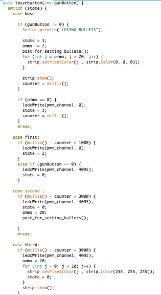
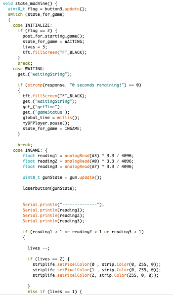
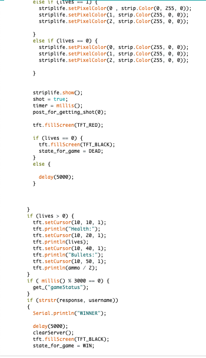
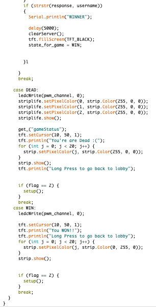
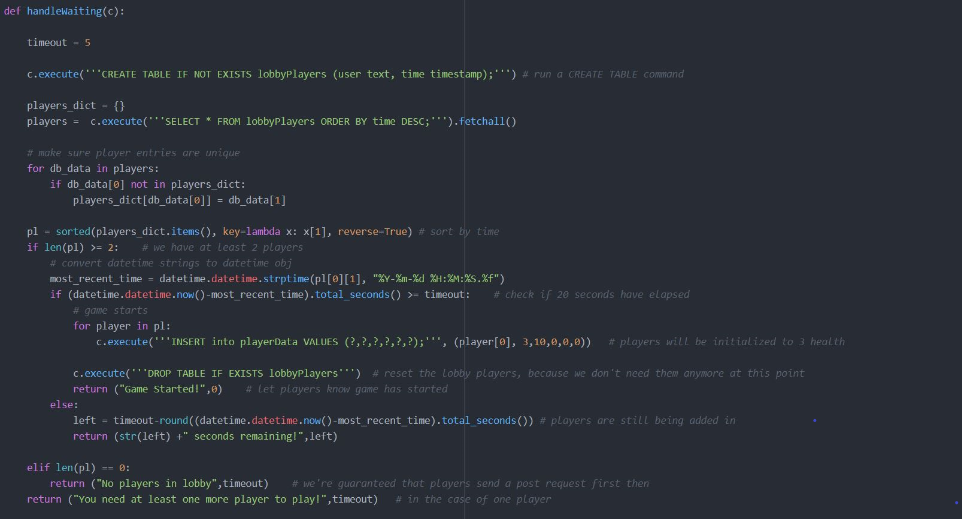
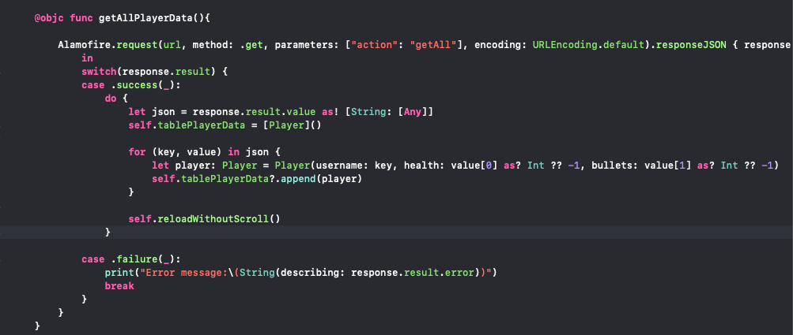
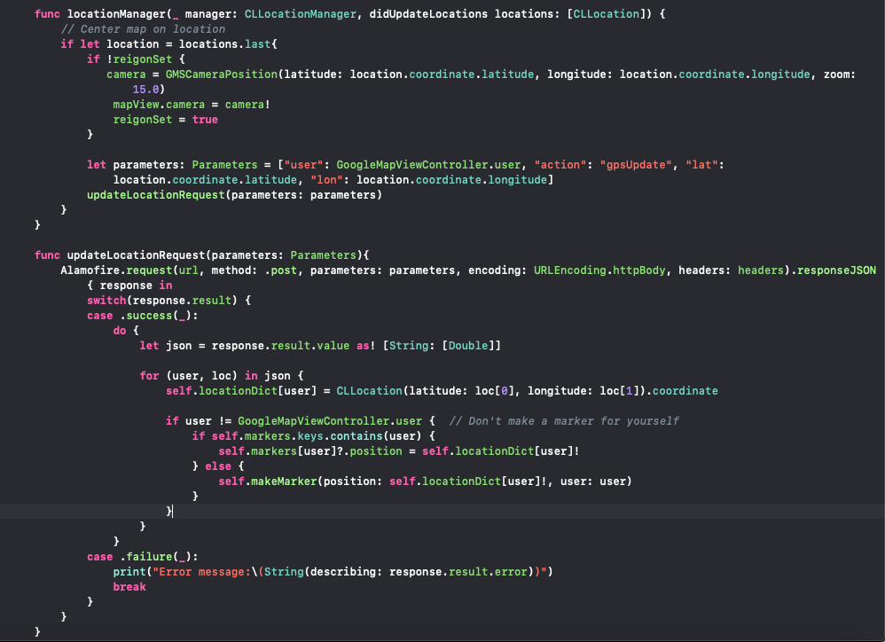

Code
All of our code, including this website can be found Here.
Final.ino
This final contains all of the ESP32 code code including the state machines for the game logic, lights, and laser. We utilized 6.08's Classy Button and PWM classes in our project.
This is a state machine with 4 states. Overall, this function is supposed to turn off the laser if there are no bullets left and reload the gun if the trigger is held for 1 second. In the base case, the user has not pressed the laser gun’s trigger. If the button is pressed, the function moves to its first state and starts a timer. In the first state, if the button is released, the function returns to the base state. However, if one second has passed and the button is still being pressed, the laser’s PWM will be set to 0 (which turns off the laser) and the function will move to its second state. In the second state, the function will wait two more seconds before it turns on the laser again, returns to state 0, and resets the number of bullets to its maximum. If the player is in the base state and has 0 bullets, the function will start a timer, turn off the laser, and enter the third state. In the third state, the function will wait 3 seconds before it turns the laser back on, resets the bullets, and return to the base state.
Additionally, this function should control the number of bullets each player has and adjust and LED strip to represent this number. In the base state, the function checks if function laserbutton() is in state 2. If so, the function lights up every LED white. If the function gets a reading that the player shot a bullet, 2 LED’s from the strip will turn off to represent that the player just used a bullet and the function will move to its first state. In the first state, the function either waits .2 seconds to return to the base state, or waits 1 second and then turns on all the lights on the LED strip.
In the INITILIZE state the ESP32 waits for the user to long press, to post to the server that they are in the lobby. It will then transition to the WAITING state and give the user 3 lives.
In the WAITING state the ESP32 will do GET requests to the server awaiting for it to return "0 seconds remaining!" so that the ESP32 could go to the next state and for the game to start.
In the INGAME state, when any of the phototransistors are activated (reading1*3.3/4096 < 1, reading2*3.3/4096 < 1, reading3*3.3/4096 < 1), the number of lives a player has adjusts and displays on the LCD accordingly whenever a player is shot. A POST request that updates the number of bullets on the server is made here. Initially, every player starts with 3 green LED’s turned on to signify full health. If a reading is made that says the player was shot, the function checks how many lives the player had and decreases the number of lives by 1. If a player with one life is shot, all LED’s turn off, signifying the player has lost. Once the player has lost, they will transition to the DEAD state. Every three seconds and if the user is still alive, the ESP32 will do a GET request to see if it's username is the being returned by the request. If the ESP32 get the request of its own username, then it will go into the WIN state.
In the DEAD state, the player will continue do a GET request that displays the status of the current game. The plaer can long press to initiate start up and allow for a new game to be started.
In the WIN state, the ESP32's LEDs will shine all green and allow for the player to go back to setup after a long press, to start a new game
request.py
request.py is the server-side code uploaded to 608dev.net. It contains all of the request handlers for GET and POST requests that the ESP32 and mobile app make.

This method inserts unique players and records when they posted they are ready yto check agaist other players to make sure there is at least 2 players to play a game.
This method takes in a cursor and checks to see if there is at least 2 players who have waited at least 5 seconds before the last person has posted that they are ready to start a game once this is confirmed all the players are transferred to the game database called playerData from the lobby database called lobbyPlayers.

These methods allow a get request with a parameter called "action" to be used when requesting for specifi data. These methods are specifically used by only the mobile application so that it can use json dictionaries and easy to parse data.

This method is called every second on the ESP to give the player information on the game wether they are alive or dead to see how the game is progressing with them in ther or not it tells the player how many people are left in the game including them if they are alive and not otherwise.

These methods are used as POST requests with the special "action" parameter that tallows players to update the server with their information like Bullets or Health so that the mobile app has accurate data and so that the server can keep track of who is alive and dead

This POST method takes in a user and updates their values when they are shot. If they have taken their final shot then theya re removed from the database and cannot make any further updates and returns a line for ESP use to display.

This POST method takes in a usrname and GPS locations fromm the mobile app and updates the position of that player in the database and returns the json representation of this data to display on the mobile app.
Mobile-App.zip
Contains all of the code for the mobile app, which includes a storyboard, xib files for custom tableview cells, and code for each view controller which make requests to the 608 server. Uses Alamofire.

getAllPlayersInGame sends the "getPlayers" request to the server and returns a dictionary of {username: [health, bullets, lat, lon]}. This data is stored locally and used to populate the UITable, and reloaded with the reloadWithoutScroll() function. getAllPlayersInGame() is called every 0.5 seconds.
This is the GPS code. locationManager 'didUpdateLocations' is called whenever the iPhone recieves new GPS data; every time this happens, the app launches a 'GPSUpdate' post request updating that particular player's GPS location; additionally the function invokes the updateLocationRequest method which makes a GET request, getting the locations of all the players in the game. This information is displayed in the GoogleMapViewController as markers with annotated names, so that you can see where every player is.
clear.py
This is a seperate file we used to debug and clear the servers when we are finished with a game used by the winner to allow a new game to be played.
Clears all values in a database for debugging